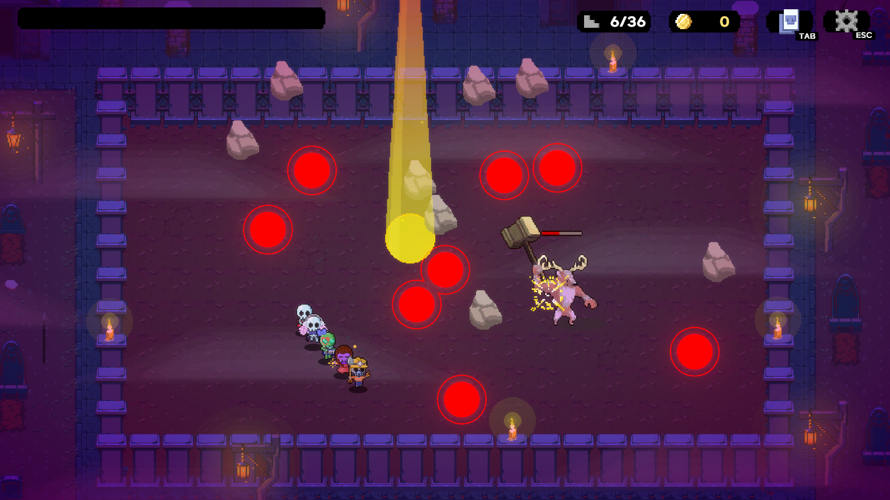
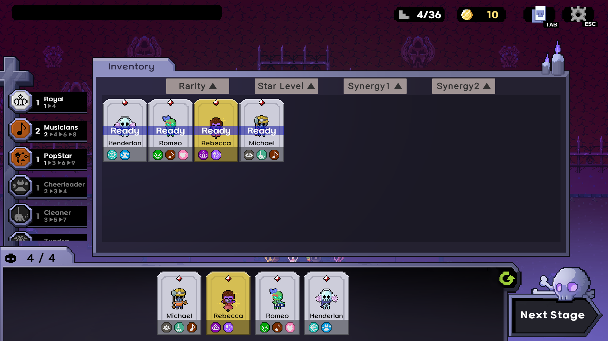
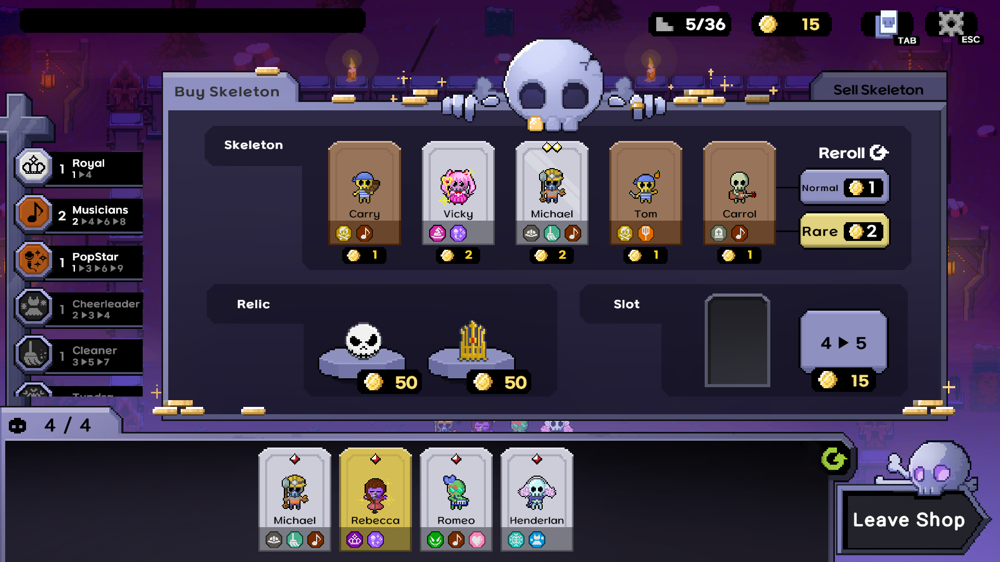
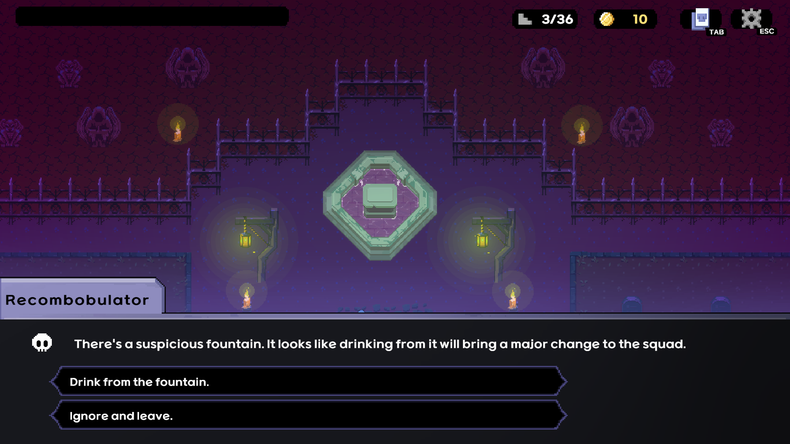
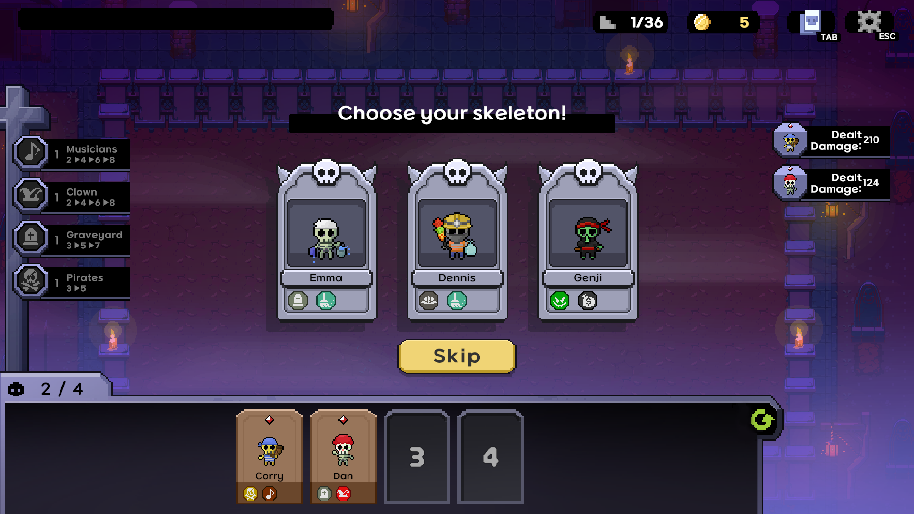
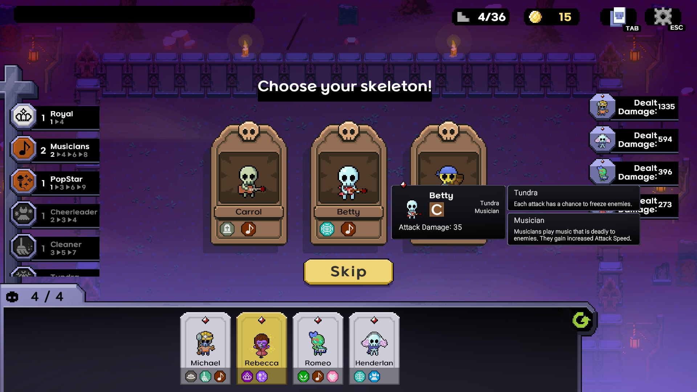
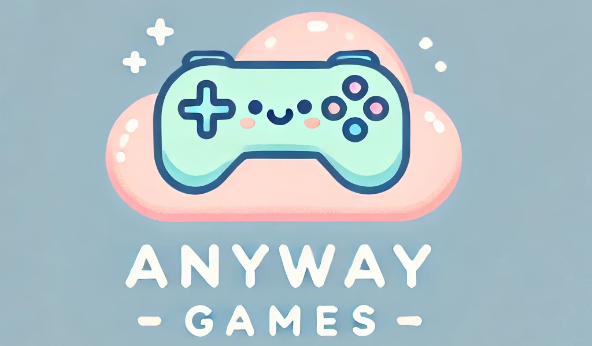
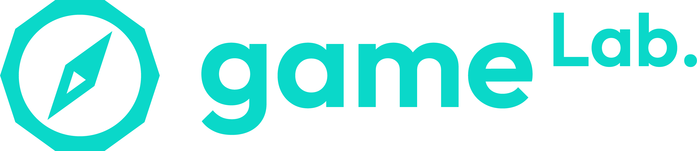

Pitch핵심 소개
"Bone To Gather" is a synergy-building action roguelike. Embark on an epic journey with a team of puny skeletons determined to revenge the Demon King. Recruit skeletons with unique synergies to create a powerful team and battle through monsters on your way to the final showdown.본 투 게더는 시너지를 조합하는 액션 로그라이크입니다. 마왕에게 복수하려는 작은 해골들과 함께 모험을 떠나세요. 서로 다른 시너지를 지닌 해골을 영입해 강력한 팀을 만들고, 몬스터들을 물리치며 마지막 결전을 향해 나아갑니다.
Descriptions게임 소개
Variety of Unique Skeletons개성 넘치는 해골들
The skeletons come from various backgrounds and have different roles.해골들은 저마다 다른 배경과 역할을 지니고 있습니다.
Meet a popstar from the slums, a clown from a pirate crew, and a cleaner from a magic academy who have gathered from all over the land to reclaim the pride of skeletons.빈민가의 팝스타, 해적단의 광대, 마법학교의 청소부까지. 해골의 자존심을 되찾기 위해 각지에서 모여든 동료들을 만나보세요.
Building Synergies시너지 구성
Placing skeletons from the same background or with the same role on the battlefield will grant special effects to your team.같은 배경이나 역할을 지닌 해골을 전장에 함께 배치하면 팀에 특별한 효과가 부여됩니다.
There are hundreds of possible combinations and matchups. Find the best synergies to build the strongest team!수백 가지 조합과 상성이 기다립니다. 최고의 시너지를 찾아 가장 강력한 팀을 만드세요!
Bone-gathering Action뼈를 모으며 펼치는 액션
Put your team’s power to the test on the battlefield!전장에서 팀의 힘을 시험해 보세요!
But watch out - skeletons will immediately shatter if they take even a SINGLE hit.하지만 조심하세요. 해골은 단 한 번만 공격받아도 곧바로 산산조각 납니다.
Don’t worry, skeletons never die. You can bring them back to life by collecting their scattered bones. Hurry to gather those bones before your entire team breaks apart!걱정하지 마세요. 해골은 죽지 않습니다. 흩어진 뼈를 모으면 다시 일으킬 수 있어요. 팀 전체가 무너지기 전에 서둘러 뼈를 모으세요!
Dynamic Events and Rewards다채로운 이벤트와 보상
Encounter a variety of events between boss battles.보스전 사이사이에 다양한 이벤트를 만나보세요.
Enhance your deck with the rewards you earn from these events!이벤트에서 얻은 보상으로 덱을 강화하세요!
Videos영상
Screenshots스크린샷






About Developer개발팀 소개
Team Size: 5팀 규모: 5명
Email: iris61214@gmail.com이메일: iris61214@gmail.com
X: https://x.com/ANYWAYGAMESX: https://x.com/ANYWAYGAMES
Discord: https://discord.gg/CQaGE8sb48디스코드: https://discord.gg/CQaGE8sb48

Anyway Games is a game development team formed within the KRAFTON Jungle Game Lab program. Our team consists of aspiring game developers and university students preparing to enter the game industry. We developed Bone To Gather over the course of approximately three months.
Anyway Games는 크래프톤 정글 게임랩 프로그램에서 결성된 게임 개발팀입니다. 게임 업계 진출을 준비하는 예비 개발자와 대학생으로 구성되어 있으며, 약 3개월에 걸쳐 본 투 게더를 개발했습니다.
About Publisher퍼블리셔 소개
Jungle Game Lab정글 게임랩

Contact: junglegamelab@krafton.com문의: junglegamelab@krafton.com
Website: https://jungle.krafton.com/웹사이트: https://jungle.krafton.com/
Jungle Game Lab is an intensive 24-week program designed for aspiring game developers, inspired by the core philosophy of KRAFTON Jungle: immersive experiences, self-directed learning, and team collaboration. This program takes participants through the entire game development journey—from mastering the basics to launching a game on Steam.정글 게임랩은 크래프톤 정글의 핵심 철학인 몰입, 자기주도 학습, 팀 협업을 바탕으로 예비 게임 개발자를 양성하는 24주 집중 프로그램입니다. 기초 학습부터 Steam 출시까지 게임 개발의 전 과정을 경험합니다.